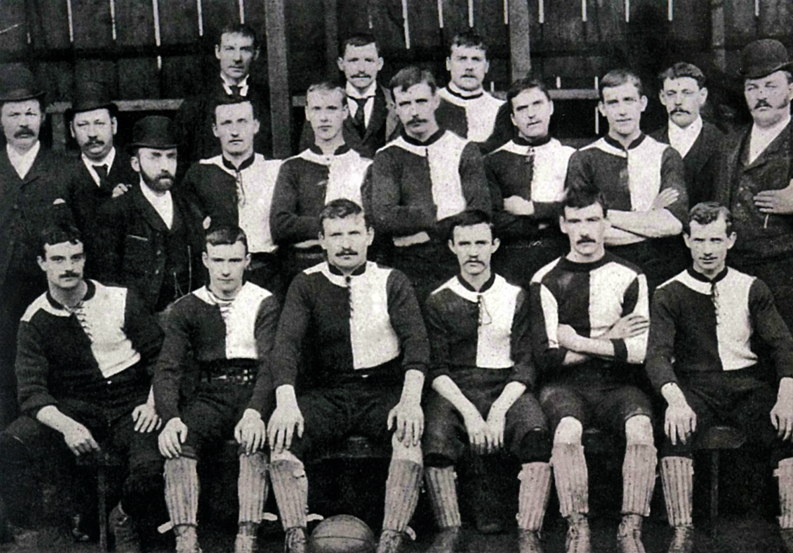

-
Manchester United
-

- About
- Registration
- Products
- Introduction
Kits Design

Newton Heath's uniform in 1879, four years before the club played its first competitive match, has been documented as
'white with blue cord'. A photograph of the Newton Heath team, taken in 1892, is believed to show the players wearing red-and-white quartered jerseys and navy blue knickerbockers. Between 1894 and 1896, the players wore distinctive green and gold jerseys which were replaced in 1896 by white shirts, which were worn with navy blue shorts.
After the name change in 1902, the club colours were changed to red shirts, white shorts, and black socks, which has become the standard Manchester United home kit. Very few changes were made to the kit until 1922 when the club adopted white shirts bearing a deep red "V" around the neck, similar to the shirt worn in the 1909 FA Cup Final. They remained part of their home kits until 1927. For a period in 1934, the cherry and white hooped change shirt became the home colours, but the following season the red shirt was recalled after the club's lowest ever league placing of 20th in the Second Division and the hooped shirt dropped back to being the change. The black socks were changed to white from 1959 to 1965, where they were replaced with red socks up until 1971 with white used on occasion, when the club reverted to black. Black shorts and/or white socks are sometimes worn with the home strip, most often in away games, if there is a clash with the opponent's kit. For 2018–19, black shorts and red socks became the primary choice for the home kit. Since 1997–98, white socks have been the preferred choice for European games, which are typically played on weeknights, to aid with player visibility. The current home kit is a red shirt with the trademark Adidas three stripes in red on the shoulders, white shorts, and black socks.
The Manchester United away strip has often been a white shirt, black shorts and white socks, but there have been several exceptions. These include an all-black strip with blue and gold trimmings between 1993 and 1995, the navy blue shirt with silver horizontal pinstripes worn during the 1999–2000 season, and the 2011–12 away kit, which had a royal blue body and sleeves with hoops made of small midnight navy blue and black stripes, with black shorts and blue socks. An all-grey away kit worn during the 1995–96 season was dropped after just five games, most notoriously against Southampton where Alex Ferguson forced the team to change into the third kit during half-time of its final outing. The reason for dropping it being that the players claimed to have trouble finding their teammates against the crowd, United failed to win a competitive game in the kit. In 2001, to celebrate 100 years as "Manchester United", a reversible white/gold away kit was released, although the actual match day shirts were not reversible.
The club's third kit is often all-blue, this was most recently the case during the 2014–15 season. Exceptions include a green-and-gold halved shirt worn between 1992 and 1994, a blue-and-white striped shirt worn during the 1994–95 and 1995–96 seasons and once in 1996–97, an all-black kit worn during the Treble-winning 1998–99 season, and a white shirt with black-and-red horizontal pinstripes worn between 2003–04 and 2005–06. From 2006–07 to 2013–14, the third kit was the previous season's away kit, albeit updated with the new club sponsor in 2006–07 and 2010–11, apart from 2008–09 when an all-blue kit was launched to mark the 40th anniversary of the 1967–68 European Cup success.